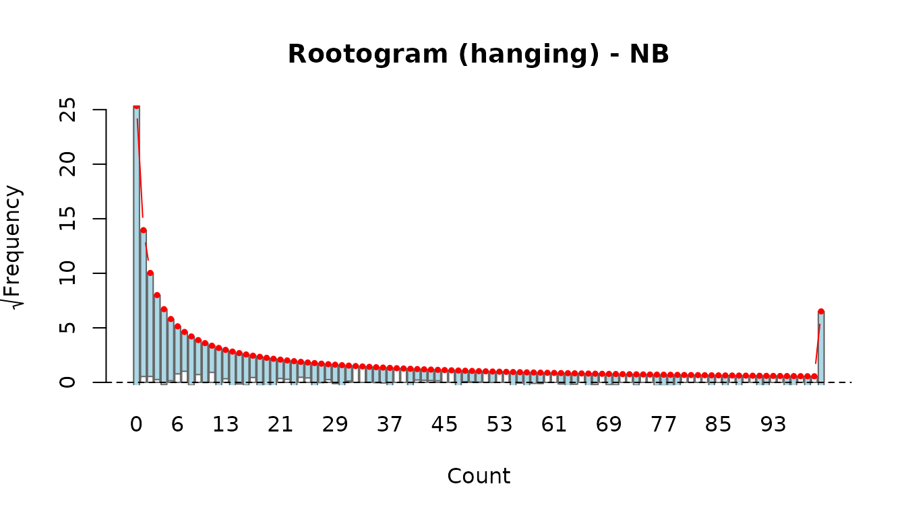
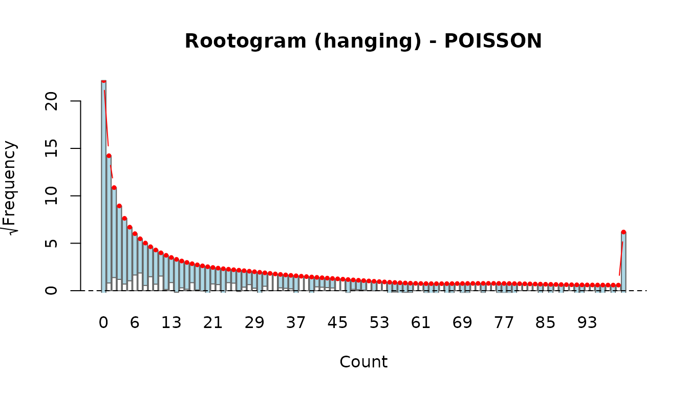
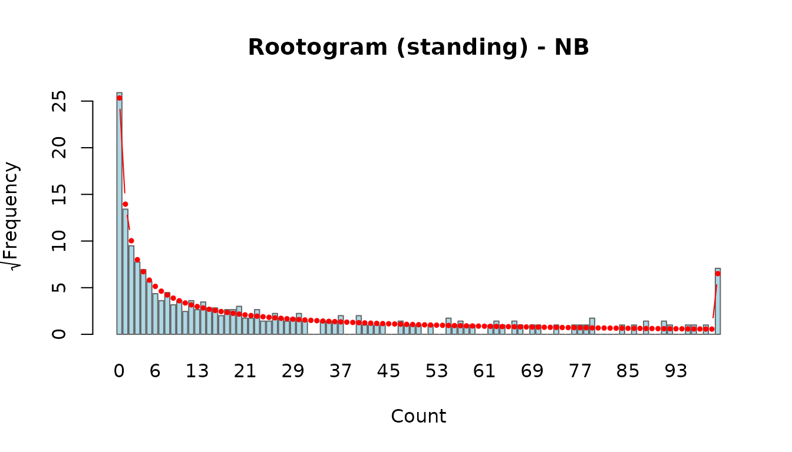
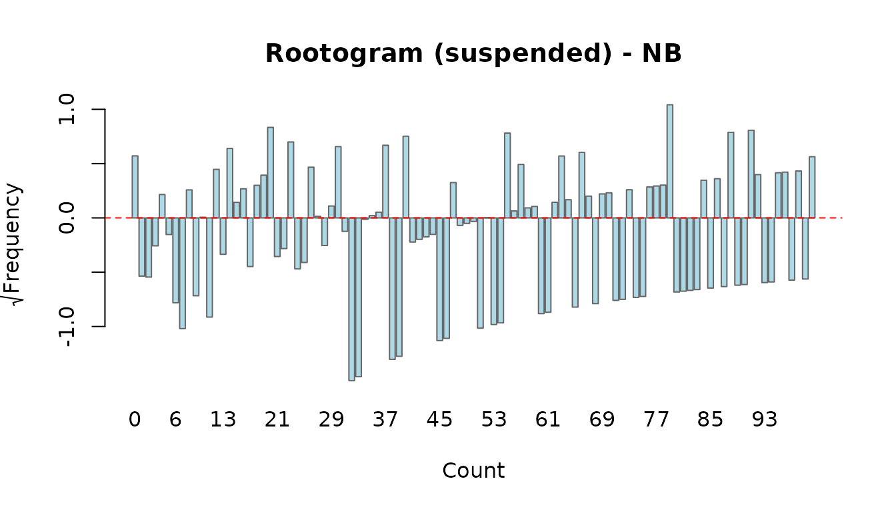
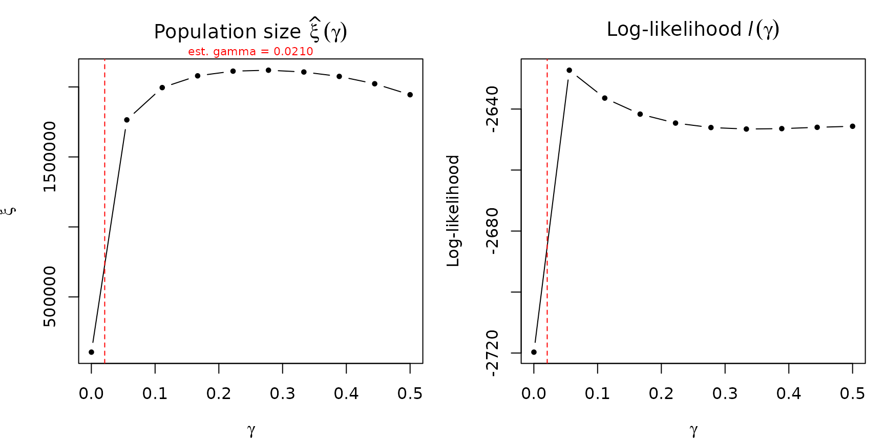
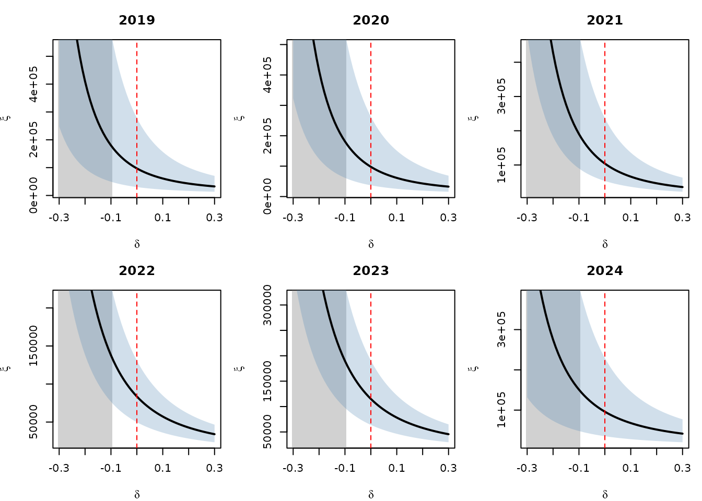

This vignette demonstrates the diagnostic and model-comparison tools available in the uncounted package. We cover goodness-of-fit statistics, residual analysis, rootograms, exploratory log-log plots, leave-one-out sensitivity analysis, and gamma profiling. Together these tools help you decide which model specification is most appropriate and whether the population-size estimates are robust.
1. Setup: fitting Poisson and Negative Binomial models
We use the irregular_migration dataset shipped with the
package. Two models are fitted—Poisson and Negative Binomial—with year
and sex covariates on alpha and year covariates on beta.
library(uncounted)
data(irregular_migration)
fit_po <- estimate_hidden_pop(
data = irregular_migration,
observed = ~ m, auxiliary = ~ n, reference_pop = ~ N,
method = "poisson",
cov_alpha = ~ factor(year) + sex, cov_beta = ~ factor(year),
countries = ~ country_code
)
fit_nb <- estimate_hidden_pop(
data = irregular_migration,
observed = ~ m, auxiliary = ~ n, reference_pop = ~ N,
method = "nb",
cov_alpha = ~ factor(year) + sex, cov_beta = ~ factor(year),
countries = ~ country_code
)Quick summaries:
summary(fit_po)
#> Unauthorized population estimation
#> Method: POISSON | estimator: MLE | link_rho: power | vcov: HC3
#> N obs: 1382
#> Gamma: 0.007257 (estimated)
#> Log-likelihood: -8217.24
#> AIC: 16462.49 BIC: 16535.73
#> Deviance: 13831.69
#>
#> Coefficients:
#> Estimate Std. Error z value Pr(>|z|)
#> alpha:(Intercept) 0.7887596 0.0903273 8.7322 < 2.2e-16 ***
#> alpha:factor(year)2020 0.0014537 0.0959447 0.0152 0.987911
#> alpha:factor(year)2021 -0.0172363 0.0872209 -0.1976 0.843345
#> alpha:factor(year)2022 -0.0934949 0.1092305 -0.8559 0.392031
#> alpha:factor(year)2023 -0.1134964 0.1773040 -0.6401 0.522092
#> alpha:factor(year)2024 -0.1689875 0.1612254 -1.0481 0.294572
#> alpha:sexMale 0.0420096 0.0458804 0.9156 0.359860
#> beta:(Intercept) 0.6750538 0.1947567 3.4661 0.000528 ***
#> beta:factor(year)2020 0.1894950 0.2273955 0.8333 0.404660
#> beta:factor(year)2021 0.2338181 0.2124527 1.1006 0.271086
#> beta:factor(year)2022 0.0892652 0.2486466 0.3590 0.719592
#> beta:factor(year)2023 -0.0518049 0.3783833 -0.1369 0.891101
#> beta:factor(year)2024 -0.3221328 0.3184801 -1.0115 0.311792
#> ---
#> Signif. codes: 0 '***' 0.001 '**' 0.01 '*' 0.05 '.' 0.1 ' ' 1
#>
#> -----------------------
#> Population size estimation results:
#> (BC = bias-corrected using model-based variance)
#> Observed Estimate Estimate (BC) CI lower CI upper
#> year=2019, sex=Female 1,535 21,086 21,054 3,400 130,357
#> year=2019, sex=Male 5,069 59,948 59,865 10,219 350,697
#> year=2020, sex=Female 698 23,647 23,582 6,023 92,324
#> year=2020, sex=Male 2,700 66,768 66,577 22,931 193,299
#> year=2021, sex=Female 483 22,769 22,704 7,266 70,941
#> year=2021, sex=Male 2,622 65,095 64,901 32,339 130,248
#> year=2022, sex=Female 317 14,118 14,082 2,476 80,080
#> year=2022, sex=Male 2,632 32,920 32,843 7,365 146,448
#> year=2023, sex=Female 523 12,068 12,047 533 272,106
#> year=2023, sex=Male 3,839 28,848 28,804 1,219 680,547
#> year=2024, sex=Female 956 7,111 7,104 576 87,598
#> year=2024, sex=Male 5,731 17,475 17,461 1,176 259,267
summary(fit_nb)
#> Unauthorized population estimation
#> Method: NB | estimator: MLE | link_rho: power | vcov: HC1
#> N obs: 1382
#> Gamma: 0.02096 (estimated)
#> Theta (NB dispersion): 1.3556
#> Log-likelihood: -2621.12
#> AIC: 5272.23 BIC: 5350.7
#> Deviance: 1276.1
#>
#> Coefficients:
#> Estimate Std. Error z value Pr(>|z|)
#> alpha:(Intercept) 0.816423 0.034346 23.7708 < 2.2e-16 ***
#> alpha:factor(year)2020 -0.042599 0.057044 -0.7468 0.4552054
#> alpha:factor(year)2021 0.074765 0.059647 1.2535 0.2100378
#> alpha:factor(year)2022 -0.030640 0.073431 -0.4173 0.6764887
#> alpha:factor(year)2023 0.014987 0.055947 0.2679 0.7887861
#> alpha:factor(year)2024 0.069038 0.047778 1.4450 0.1484639
#> alpha:sexMale 0.044355 0.013144 3.3746 0.0007394 ***
#> beta:(Intercept) 0.874992 0.092533 9.4560 < 2.2e-16 ***
#> beta:factor(year)2020 0.139329 0.116766 1.1932 0.2327759
#> beta:factor(year)2021 0.467189 0.121614 3.8416 0.0001223 ***
#> beta:factor(year)2022 0.183987 0.151630 1.2134 0.2249786
#> beta:factor(year)2023 0.182874 0.110517 1.6547 0.0979836 .
#> beta:factor(year)2024 0.131714 0.092840 1.4187 0.1559805
#> ---
#> Signif. codes: 0 '***' 0.001 '**' 0.01 '*' 0.05 '.' 0.1 ' ' 1
#>
#> -----------------------
#> Population size estimation results:
#> (BC = bias-corrected using model-based variance)
#> Observed Estimate Estimate (BC) CI lower CI upper
#> year=2019, sex=Female 1,535 28,104 25,768 12,733 52,147
#> year=2019, sex=Male 5,069 83,167 75,866 35,801 160,765
#> year=2020, sex=Female 698 19,950 18,056 6,724 48,490
#> year=2020, sex=Male 2,700 57,320 51,550 18,776 141,529
#> year=2021, sex=Female 483 82,820 72,696 24,240 218,014
#> year=2021, sex=Male 2,622 257,145 224,052 71,913 698,056
#> year=2022, sex=Female 317 38,071 34,481 7,929 149,957
#> year=2022, sex=Male 2,632 89,818 82,008 20,889 321,959
#> year=2023, sex=Female 523 66,664 60,739 20,285 181,867
#> year=2023, sex=Male 3,839 159,224 146,471 52,775 406,517
#> year=2024, sex=Female 956 120,797 111,073 46,514 265,233
#> year=2024, sex=Male 5,731 302,887 280,588 121,122 650,0012. Model comparison
Comparison table
compare_models() produces a side-by-side table of
log-likelihood, AIC, BIC, deviance, Pearson chi-squared, RMSE, and three
pseudo
measures:
-
R2_cor: — squared correlation between observed and fitted values. -
R2_D: Explained deviance , where the null model is the same specification without covariates (single , single ). Measures how much covariates improve the fit beyond the baseline power-law structure. -
R2_CW: Cameron–Windmeijer (1996) pseudo , which uses the model-implied variance function — specifically designed for count data regression.
Models are sorted by AIC (the default). Note that R2_D
compares the fitted model against a null model (same method, no
covariates). If the model has no cov_alpha /
cov_beta, then R2_D = 0 by construction — it
only becomes informative when covariates are present.
comp <- compare_models(Poisson = fit_po, NB = fit_nb, sort_by = "AIC")
comp
#> Model comparison
#> ------------------------------------------------------------
#> Model Method Estimator Link Constrained n_par logLik AIC BIC
#> NB NB MLE power FALSE 15 -2621.12 5272.23 5350.70
#> Poisson POISSON MLE power FALSE 14 -8217.24 16462.49 16535.73
#> Deviance Pearson_X2 RMSE R2_cor R2_D R2_CW
#> 1276.10 3089.37 206.08 0.4064 -0.0031 0.9526
#> 13831.69 17499.16 52.53 0.8279 0.3139 0.9827Lower AIC and BIC values indicate a better trade-off between fit and
complexity. The Pearson chi-squared statistic divided by its degrees of
freedom (approximately n_obs - n_par) gives a quick
dispersion check: values much greater than 1 suggest overdispersion,
which favours the NB model over Poisson.
Likelihood ratio test
Because the Poisson model is nested within the Negative Binomial (the
Poisson is the NB with theta -> infinity), we can use a likelihood
ratio test. lrtest() applies the boundary correction of
Self & Liang (1987) automatically when comparing Poisson against NB,
because the dispersion parameter lies on the boundary of the parameter
space under H0.
lrtest(fit_po, fit_nb)
#> Likelihood ratio test
#> ----------------------------------------
#> Model 1: POISSON (logLik = -8217.24 )
#> Model 2: NB (logLik = -2621.12 )
#> LR statistic: 11192.26 on 1 df
#> (Boundary-corrected: 0.5 * chi2_0 + 0.5 * chi2_1, Self & Liang 1987)
#> p-value: < 2.2e-16A small p-value indicates significant overdispersion, favouring the NB model.
Comparing two Poisson models is different. With overdispersion their
LR statistic is not chi-squared and the test rejects far too often.
lrtest() reports the Pearson dispersion and notes when it
is high. In that case use the robust Wald test,
lrtest(fit_small, fit_large, test = "Wald"), which tests
the larger model’s extra coefficients with its sandwich covariance.
3. Residual diagnostics
Residual types
The residuals() method supports four types:
- response: raw residuals, .
- pearson: standardised by the variance function, .
- deviance: signed square root of individual deviance contributions.
- anscombe: variance-stabilising residuals (approximately standard normal for a well-specified model).
r_resp <- residuals(fit_nb, type = "response")
r_pear <- residuals(fit_nb, type = "pearson")
r_dev <- residuals(fit_nb, type = "deviance")
r_ansc <- residuals(fit_nb, type = "anscombe")
summary(r_pear)
#> Min. 1st Qu. Median Mean 3rd Qu. Max.
#> -1.15150 -0.59499 -0.28870 0.03629 0.11049 22.90321
summary(r_ansc)
#> Min. 1st Qu. Median Mean 3rd Qu. Max.
#> -24.1705 -1.0760 -0.4674 -0.3349 0.1768 9.4248Four-panel diagnostic plot
plot() on a fitted model produces the Zhang (2008)
four-panel display:
- Fitted vs Observed (sqrt scale) – points should cluster around the 45-degree line.
- Anscombe residuals vs fitted – the running mean should be flat near zero (no systematic misfit).
- Scale-Location – absolute Anscombe residuals vs fitted; an increasing trend signals under-modelled variance.
- Normal Q-Q – Anscombe residuals should follow the reference line if the distributional assumption holds.
par(op)What to look for:
- Curvature in Panel 1 suggests the mean function is misspecified.
- A non-flat smoother in Panel 2 indicates systematic bias at certain fitted-value ranges.
- A fan shape in Panel 3 points to overdispersion or heteroscedasticity.
- Heavy tails or S-shapes in Panel 4 indicate departure from the assumed distribution.
Compare with the Poisson fit to see whether switching to NB resolves any patterns:
par(op)4. Rootograms
Rootograms (Kleiber & Zeileis, 2016) compare the observed and fitted count-frequency distributions directly. Three display styles are available:
- hanging (default): observed bars are hung from the fitted curve. If the model fits well, the bottom of each bar touches zero.
- standing: observed bars stand on the x-axis with the fitted curve overlaid. Harder to judge discrepancies visually.
- suspended: plots the difference directly. Bars crossing zero indicate over- or under-prediction at that count.
rootogram(fit_nb, style = "hanging")
rootogram(fit_po, style = "hanging")
Compare the two: if the Poisson rootogram shows bars consistently hanging below the zero line at small counts and above at moderate counts, this is a classic overdispersion signature that the NB model should correct.
rootogram(fit_nb, style = "standing")
rootogram(fit_nb, style = "suspended")
5. Exploratory log-log plots
Before or after fitting, plot_explore() produces two
log-log scatter plots that reveal the marginal relationships underlying
the power-law model:
- log(m/N) vs log(N): the slope approximates . A slope near zero means the apprehension rate is roughly independent of population size (). A negative slope indicates decreasing returns to scale ().
- log(m/N) vs log(n/N): the slope approximates . A positive slope confirms that the auxiliary rate is predictive of the apprehension rate.
Observations with or are excluded (undefined on the log scale).
plot_explore(fit_nb)These plots are exploratory visual checks. The OLS lines overlaid are rough guides—the formal model accounts for covariates and the gamma offset.
6. Leave-one-out sensitivity analysis
LOO refits the model repeatedly, dropping one observation (or one country) at a time, to assess how much each unit influences the total population-size estimate.
LOO by country
Dropping all rows for a country measures its structural contribution. This is computationally intensive (one refit per country).
loo_po_ctry <- loo(fit_po, by = "country", verbose = TRUE)
loo_nb_ctry <- loo(fit_nb, by = "country", verbose = TRUE)The print() method shows the top 10 most influential
countries ranked by
,
and summary() reports coefficient and xi stability across
all LOO refits.
The xi bar plot shows which countries pull the total estimate up (red bars, dropping the country decreases the estimate) or down (blue bars).
LOO by observation
Dropping individual rows identifies specific data points that drive the estimate. Useful for outlier detection.
Comparing LOO across models
compare_loo() brings together LOO results from two
models and produces a scatter plot where each axis shows the percentage
change in xi when dropping a given unit:
comp_loo <- compare_loo(
loo_po_ctry, loo_nb_ctry,
labels = c("Poisson", "NB")
)
print(comp_loo)Scatter plot interpretation (4 quadrants):
plot(comp_loo, type = "scatter")- Top-right (+, +): dropping this unit increases the estimate under both models. The unit was pulling the estimate down in both.
- Bottom-left (-, -): dropping this unit decreases the estimate under both models. The unit was pulling the estimate up in both.
- Off-diagonal (top-left or bottom-right): divergent influence. The unit affects the two models in opposite directions—a sign that model choice matters for that unit.
- Near the origin: non-influential under both models.
Points near the diagonal indicate consistent influence; points far from the diagonal warrant investigation.
plot(comp_loo, type = "bar")The side-by-side bar plot ranks countries by maximum absolute percentage change across both models, making it easy to spot the most consequential units.
7. Gamma profile
profile_gamma() refits the model across a grid of fixed
gamma values and plots two curves:
- : how the total population-size estimate changes with gamma.
- : the profile log-likelihood as a function of gamma.
prof <- profile_gamma(fit_nb, gamma_grid = seq(1e-4, 0.5, length.out = 10))
Interpretation:
- A sharp peak in the log-likelihood curve means gamma is well-identified by the data. The MLE is precise and the population-size estimate is robust to small perturbations in gamma.
- A flat log-likelihood curve means gamma is weakly identified. The data cannot distinguish between a range of gamma values, and the population-size estimate may be sensitive to the gamma assumption. In this case, reporting results for several gamma values (or fixing gamma based on external information) is advisable.
If the original model estimated gamma, its point estimate is marked with a dashed red vertical line. The xi profile shows whether the population-size estimate is stable (flat) or sensitive (steep) across the gamma range.
The profiling results are returned invisibly as a data frame:
prof <- profile_gamma(fit_nb, plot = FALSE)
head(prof)
#> gamma xi loglik
#> 1 0.00010000 105412.8 -2719.707
#> 2 0.02641053 1422354.4 -2621.493
#> 3 0.05272105 1742575.9 -2626.657
#> 4 0.07903158 1894432.8 -2631.701
#> 5 0.10534211 1981077.0 -2635.659
#> 6 0.13165263 2035169.1 -2638.6988. Dependence and threshold diagnostics
The factorization is an identifying assumption, not something the observed aggregated data can test directly. The package therefore keeps four related diagnostics separate:
-
dependence_bounds(): fixed-center identification envelope. -
profile_dependence(): model-based moving-\xiprofile. -
robustness_dependence(): smallest dependence strength needed to cross a target. -
exceedance_popsize(): empirical bootstrap tail area for threshold questions.
Section 8.6 adds a separate assumption-based analysis,
feedback_sensitivity(), for detection that depends on the
size of the unauthorized population.
8.1 Fixed-center identification bounds
Under the bounded sensitivity model,
the case Gamma = 1
reproduces the baseline estimate and larger values of Gamma
widen the admissible range for the total xi.
sens <- dependence_bounds(fit_nb, Gamma = c(1, 1.1, 1.25, 1.5))
sens
#> Dependence bounds analysis
#> Baseline total: 1,183,349
#> Interpretation: bounds reflect identification sensitivity, not sampling uncertainty.
#>
#> Gamma estimate lower upper pct_change_lower pct_change_upper
#> 1.00 1183349 1183348.7 1183349 0.000000 0
#> 1.10 1183349 1075771.5 1301684 -9.090909 10
#> 1.25 1183349 946678.9 1479186 -20.000000 25
#> 1.50 1183349 788899.1 1775023 -33.333333 50The table keeps the baseline estimate fixed and reports lower and upper bounds under progressively stronger departures from the separability assumption. These bounds are useful when the substantive question is whether the headline estimate would remain above or below a policy-relevant threshold under moderate departures from independence.
8.2 Moving-\xi dependence profile
profile_dependence() instead treats dependence as a
parametric offset
refits the model for each fixed
delta, and reports the resulting plug-in total
.
prof_dep <- profile_dependence(
fit_nb,
delta_grid = seq(-0.4, 0.4, length.out = 7),
plot = FALSE
)
prof_dep
#> delta kappa xi loglik
#> 1 -0.4000000 0.6703200 1278733 -2621.590
#> 2 -0.2666667 0.7659283 1285735 -2621.250
#> 3 -0.1333333 0.8751733 1294965 -2621.098
#> 4 0.0000000 1.0000000 1305972 -2621.116
#> 5 0.1333333 1.1426308 1318364 -2621.291
#> 6 0.2666667 1.3056052 1331815 -2621.607
#> 7 0.4000000 1.4918247 1346038 -2622.051Unlike dependence_bounds(), the estimate is allowed to
move because the model is re-fit at each grid point. This makes the
profile more model-dependent, but it answers a different question: how
much does the headline estimate shift under a structured departure from
separability?
8.3 Robustness value for a target crossing
The profile can be summarised by the smallest absolute
delta needed to push the total estimate across a threshold
or relative target.
robustness_dependence(
prof_dep,
threshold = attr(popsize(fit_nb, total = TRUE), "total")$estimate * 0.9,
direction = "decrease"
)
#> Dependence robustness analysis
#> Baseline xi: 1,305,972
#> Target xi: 1,175,371
#> Target not reached on supplied delta grid.This is the one-dimensional analogue of a robustness value: the
smaller the reported rv_Gamma, the less dependence is
needed to overturn the chosen substantive conclusion.
8.4 Bootstrap threshold probabilities
When the question is explicitly threshold-based, the bootstrap can be summarised as an empirical tail area rather than an interval.
boot_dep <- bootstrap_popsize(
fit_nb,
R = 99,
cluster = ~ country_code,
total = TRUE,
verbose = FALSE
)
exceedance_popsize(boot_dep, threshold = 500000)exceedance_popsize() reports a bootstrap exceedance
probability, not a Bayesian posterior probability. It is most useful for
statements such as “what fraction of bootstrap replications exceed
500,000?” rather than for constructing another confidence interval.
8.5 Omitted-frailty sensitivity for Xi
The previous diagnostics either keep the baseline estimate fixed
(dependence_bounds()), move it through a parametric
dependence offset (profile_dependence()), or summarize the
bootstrap distribution (exceedance_popsize()). A different
question is whether an omitted shared frailty could jointly affect
hidden stock and detection in a way that changes the grouped
hidden-population estimate itself.
frailty_sensitivity() addresses that question by
linearizing the fitted Poisson/NB mean model with its IRLS working
response, indexing the omitted frailty by weighted
partial-
values, and mapping the resulting first-order bias into the target
.
frailty_sensitivity(
fit_nb,
by = ~ year,
r2_d = c(0, 0.05, 0.10),
r2_y = c(0, 0.05, 0.10),
plot = FALSE
)The output reports a grouped sensitivity surface for
together with robustness values for threshold or percentage-change
questions. The full derivation is documented in
?frailty_sensitivity.
8.6 Detection feedback
The main model assumes that detection does not depend on the size of
the unauthorized population. feedback_sensitivity() indexes
departures from this by
,
the elasticity of detection with respect to that size:
Holding the fitted
and
fixed, the population size consistent with
is
Nothing is refitted. Fitted values and
likelihood are the same for every
,
so the data cannot choose among its values (compare Link, 2003; Barker
et al., 2018): only the split of
into size and detection changes. The delta of
profile_dependence() is a different quantity, a constant
shift of the mean.
feedback_calibrate() helps to choose the range. If
inspections are spread over the whole foreign population, the mechanical
congestion elasticity is the negative of the unauthorized share.
d_fb <- irregular_migration
d_fb$year <- factor(d_fb$year)
d_fb$ukr <- as.integer(d_fb$country_code == "UKR")
fit_fb <- estimate_hidden_pop(
d_fb, ~ m, ~ n, ~ N,
method = "poisson", cov_alpha = ~ year * ukr + sex, cov_beta = ~ year,
countries = ~ country_code
)
feedback_calibrate(fit_fb)
#> Feedback calibration: s = xi0 / (N + xi0)
#> Cell mean of s: 0.323
#> xi0-weighted mean of s: 0.153
#> Implied mechanical congestion elasticity: -0.153
boot_fb <- suppressWarnings(bootstrap_popsize(
fit_fb, R = 49, cluster = ~ country_code, seed = 123, verbose = FALSE,
by = ~ year
))anchor has no default, because it is as strong an
assumption as
.
is the size at which the main model’s detection function is assumed
correct, and it acts as a pivot: for
,
cells above it shrink and cells below it grow. Under
"geomean", large means large in absolute terms, so the big
Ukrainian cells lie far above
and the total falls with
.
Under "share", large means large relative to
.
Those cells have a below-typical
,
so they lie below
and the total rises. Report more than one anchor.
fb_geo <- suppressWarnings(feedback_sensitivity(
fit_fb, anchor = "geomean", by = ~ year, boot = boot_fb
))
fb_geo
#> Detection-feedback sensitivity analysis
#> Anchor: geomean (K = 41.06)
#> The anchor is an assumption and can change the direction of the result.
#> Admissible range: [-0.09, 0.3]
#> Cells left out of A2: 1 (see $a2_excluded)
#>
#> Plug-in estimates [bootstrap percentile interval]:
#> d=0.0 d=0.1
#> 2019 97,177 [30,177, 278,256] 60,997 [21,097, 156,743]
#> 2020 97,797 [37,001, 262,638] 61,332 [25,500, 150,940]
#> 2021 104,151 [53,361, 236,838] 66,038 [36,314, 136,181]
#> 2022 83,605 [49,778, 130,735] 57,242 [36,079, 84,918]
#> 2023 115,068 [63,864, 190,586] 78,300 [46,326, 122,129]
#> 2024 96,009 [35,110, 229,522] 67,815 [27,761, 146,513]
#> d=0.2
#> 2019 42,728 [16,211, 100,141]
#> 2020 42,963 [19,389, 97,686]
#> 2021 46,629 [27,246, 88,572]
#> 2022 42,755 [28,275, 60,706]
#> 2023 57,925 [36,147, 86,022]
#> 2024 51,614 [23,183, 102,673]
fb_share <- suppressWarnings(feedback_sensitivity(
fit_fb, anchor = "share", by = ~ year, boot = boot_fb
))
fb_share
#> Detection-feedback sensitivity analysis
#> Anchor: share (K from 0.4608 to 193700)
#> The anchor is an assumption and can change the direction of the result.
#> Admissible range: [-0.3, 0.3]
#> Cells left out of A2: 1 (see $a2_excluded)
#>
#> Plug-in estimates [bootstrap percentile interval]:
#> d=-0.2 d=-0.1
#> 2019 75,897 [17,929, 281,363] 86,969 [23,883, 279,415]
#> 2020 74,299 [22,370, 257,637] 86,458 [29,521, 260,035]
#> 2021 77,105 [33,818, 212,688] 90,987 [43,467, 225,631]
#> 2022 59,480 [31,476, 103,031] 71,457 [40,335, 117,020]
#> 2023 94,357 [45,148, 179,341] 104,712 [54,365, 184,461]
#> 2024 77,129 [22,183, 230,178] 86,625 [28,412, 228,750]
#> d=0.0 d=0.1
#> 2019 97,177 [30,177, 278,256] 106,551 [36,641, 277,563]
#> 2020 97,797 [37,001, 262,638] 108,303 [44,615, 265,226]
#> 2021 104,151 [53,361, 236,838] 116,522 [63,274, 246,612]
#> 2022 83,605 [49,778, 130,735] 95,728 [59,600, 144,040]
#> 2023 115,068 [63,864, 190,586] 125,372 [73,538, 197,709]
#> 2024 96,009 [35,110, 229,522] 105,299 [42,184, 231,835]
#> d=0.2
#> 2019 115,147 [43,148, 277,156]
#> 2020 118,010 [52,221, 267,703]
#> 2021 128,087 [73,048, 255,200]
#> 2022 107,682 [69,627, 157,184]
#> 2023 135,562 [83,104, 205,966]
#> 2024 114,483 [49,546, 235,229]These warnings are suppressed here but matter in practice: under the
power link one cell (Papua New Guinea, 2023, N = 1) has fitted detection
slightly above 1 already at
,
so it is left out of the admissibility check and listed in
$a2_excluded. The lower end of the "geomean"
range is also set by a very small cell, as $diagnostics
shows, although such cells barely contribute to the total.
plot(fb_geo)
Results are by year: a sum over years is not a population size, because the same people can be present in several years. The admissible range only excludes what is impossible, not what is implausible, so a whole range can give too much weight to its ends. A distribution for reflects that values near 0 are considered more likely (Greenland, 2005). The result depends completely on this choice, since the data do not update it, so the standard deviation below is an illustration to be varied.
set.seed(1)
fb_prior <- suppressWarnings(feedback_sensitivity(
fit_fb, anchor = "geomean", by = ~ year, boot = boot_fb,
delta_prior = list(mean = 0, sd = 0.05)
))
fb_prior$monte_carlo
#> group median lower upper
#> 1 2019 91885.58 36152.20 340261.5
#> 2 2020 95259.01 40737.01 268401.4
#> 3 2021 107383.49 62596.72 233702.8
#> 4 2022 78908.71 51128.63 138979.4
#> 5 2023 115626.46 58312.50 204033.4
#> 6 2024 100467.17 36742.24 213188.2
## Year-to-year change, from the same draws
draws <- attr(fb_prior$monte_carlo, "draws")
t(apply(draws[-1, ] - draws[-nrow(draws), ], 1, quantile, probs = c(0.025, 0.5, 0.975)))
#> 2.5% 50% 97.5%
#> 2020 -47156.949 304.2432 31303.37
#> 2021 -71239.033 7499.8228 99294.30
#> 2022 -136863.014 -26467.4031 29327.39
#> 2023 -3339.579 33126.2553 84937.47
#> 2024 -57795.486 -14222.8783 35575.67feedback_identified_set() bounds the population size
over the admissible range, with an interval for the true value (Imbens
and Manski, 2004; see Stoye, 2009, for the conditions) or for the whole
set.
feedback_identified_set(fb_geo)
#> Identified set over delta in [-0.09, 0.3]
#> 95% interval: imbens_manski
#> group L U delta_at_min delta_at_max ci_lower ci_upper
#> 2019 32,450 167,765 0.3 -0.09 14,987 520,767
#> 2020 32,648 169,114 0.3 -0.09 16,741 457,308
#> 2021 35,625 177,854 0.3 -0.09 21,684 378,162
#> 2022 34,036 130,193 0.3 -0.09 24,741 216,596
#> 2023 45,576 179,429 0.3 -0.09 31,321 325,805
#> 2024 41,502 143,332 0.3 -0.09 23,085 362,743feedback_tipping() asks how much feedback overturns a
statement. Here the point estimate of the change between 2019 and 2024
is very small compared with its sampling uncertainty, so the bootstrap
test does not support either direction even at
and there is no significant result to overturn. The sign of the point
estimate can change at a small
,
and where it does depends on the anchor.
feedback_tipping(fb_geo, hypothesis = "xi[year == 2024] - xi[year == 2019] > 0")
#> Detection-feedback tipping points
#> Statement: xi[year == 2024] - xi[year == 2019] > 0
#> Contrast at delta = 0: -1,168
#> Admissible range: [-0.09, 0.3]
#> Point estimate changes sign at delta: not reached (below 0), 0.0088 (above 0)
#> The bootstrap test at 95% does not support the statement at delta = 0, so there is no significant result to overturn.
feedback_tipping(fb_share, hypothesis = "xi[year == 2024] - xi[year == 2019] > 0")
#> Detection-feedback tipping points
#> Statement: xi[year == 2024] - xi[year == 2019] > 0
#> Contrast at delta = 0: -1,168
#> Admissible range: [-0.3, 0.3]
#> Point estimate changes sign at delta: -0.1263 (below 0), 0.2618 (above 0)
#> The bootstrap test at 95% does not support the statement at delta = 0, so there is no significant result to overturn.References
Barker, R. J., Schofield, M. R., Link, W. A., and Sauer, J. R. (2018). On the reliability of N-mixture models for count data. Biometrics, 74(1), 369–377. https://doi.org/10.1111/biom.12734
Beręsewicz, M., & Pawlukiewicz, K. (2020). Estimation of the number of irregular foreigners in Poland using non-linear count regression models. arXiv preprint arXiv:2008.09407. https://arxiv.org/abs/2008.09407
Greenland, S. (2005). Multiple-bias modelling for analysis of observational data. Journal of the Royal Statistical Society: Series A, 168(2), 267–306. https://doi.org/10.1111/j.1467-985X.2004.00349.x
Imbens, G. W. and Manski, C. F. (2004). Confidence intervals for partially identified parameters. Econometrica, 72(6), 1845–1857. https://doi.org/10.1111/j.1468-0262.2004.00555.x
Kleiber, C. and Zeileis, A. (2016). Visualizing Count Data Regressions Using Rootograms. The American Statistician, 70(3), 296–303. https://doi.org/10.1080/00031305.2016.1173590
Link, W. A. (2003). Nonidentifiability of population size from capture-recapture data with heterogeneous detection probabilities. Biometrics, 59(4), 1123–1130. https://doi.org/10.1111/j.0006-341X.2003.00129.x
McCullagh, P. and Nelder, J. A. (1989). Generalized Linear Models, 2nd ed. Chapman & Hall. https://doi.org/10.1007/978-1-4899-3242-6
Self, S. G. and Liang, K.-Y. (1987). Asymptotic properties of maximum likelihood estimators and likelihood ratio tests under nonstandard conditions. JASA, 82(398), 605–610. https://doi.org/10.1080/01621459.1987.10478472
Stoye, J. (2009). More on confidence intervals for partially identified parameters. Econometrica, 77(4), 1299–1315. https://doi.org/10.3982/ECTA7347
Zhang, L.-C. (2008). Developing methods for determining the number of unauthorized foreigners in Norway (Documents 2008/11). Statistics Norway. https://www.ssb.no/a/english/publikasjoner/pdf/doc_200811_en/doc_200811_en.pdf